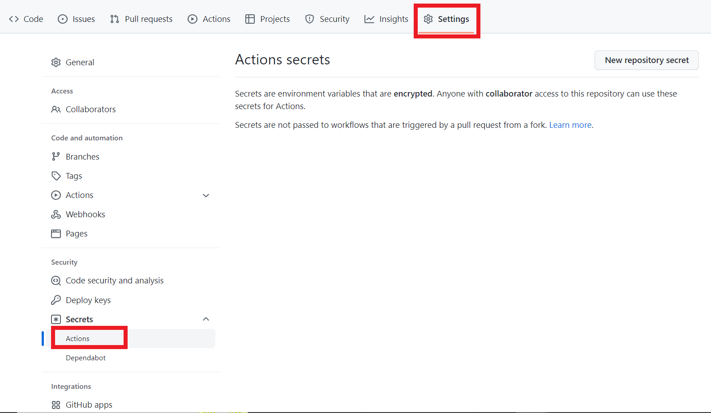

[Windows向け]GitHub Pagesを使用したサイトの開発環境構築② ～GitHub Actions使ってみた～
このブログの後編です☟☟
[Windows向け]GitHub Pagesを使用したサイトの開発環境構築① ～VM(Ubuntu)とDockerを添えて～
目次
やりたいこと
問題点
GitHub Pages を利用して本サイトを公開しているが、 Push までしないとページに反映されないのが不便。どのように画面が出来上がっているか確認しながらブログを作成したい。
やったこと
- 仮想マシンを使用し、Windows 上で Linux (Ubuntu) を起動
- Windows と Ubuntu を SSH 接続
- git や gh コマンド、Docker を Ubuntu にインストール
- 「[アカウント名].github.io」のリポジトリと同一の内容のリポジトリ（作業用）を作成 → Ubuntu に clone
- Docker を利用して Web サーバを立て、作業用リポジトリ（ローカル）のデータをブラウザに表示できるようにする
今回やること
作業用のリポジトリの変更を、メインのリポジトリに反映（push）させる作業を自動化したい。
→ GitHub Actionsを利用して、作業用のリポジトリに push したらメインのリポジトリにも同様の変更が push されるようにする。
GitHub Actionsとは
今回初めて使用する GitHub Actions とは何なのかを調べてみました。
公式ドキュメントの文章を引用すると
GitHub Actions は、ビルド、テスト、デプロイのパイプラインを自動化できる継続的インテグレーションと継続的デリバリー (CI/CD) のプラットフォームです。 リポジトリに対するすべての pull request をビルドしてテストしたり、マージされた pull request を運用環境にデプロイしたりするワークフローを作成できます。
引用元：GitHub Actions を理解する
とあります。
CI/CD とは、Continuous Integration / Continuous Delivery の略称で、テストやリリースなどの従来手作業で行っていたものを自動化して行うシステム開発の仕組みのことです。
GitHub Actions では、リポジトリへの Push や Pull request などのイベントをトリガーとして、YAML ファイルに定義されたプロセス（=ワークフロー）を実行してくれます。
（手動でトリガーしたり、定刻でトリガーしたりも可能）
ワークフローの実行には GitHub のサーバ上にある仮想マシン(Linux, Windows, macOS)が提供されるので、ユーザが環境を準備する必要がない点もメリットの1つです。
Free の GitHub アカウントの場合は１か月当たりのワークフロー実行時間 2000分まで、Pro アカウントなら3000分まで無料で使用できます。
時間のかかる処理を何度も行う人でない限り、無料枠で十分利用可能なのでは？と思います🤔
GitHub Actionsで他リポジトリにpushする
今回、自動化したい処理は以下の通りです。
トリガー … 作業用リポジトリへの Push
実行処理 … メインリポジトリに作業用リポジトリの変更が Push される
早速、GitHub Actions を使って上記処理の自動化に挑戦してみましょう！
-
トークンの作成
下記のサイトでトークンを新規作成 (Generate new token)
GitHub/Personal access tokens設定項目は以下の通り
Note: お好みのトークンの名前を付けてあげてね
Expiration（有効期限）: トークンの有効期限（No expiration = 無期限）
Select scopes: repo にチェック☑→ Generate token ボタンポチでトークン作成完了
- 作業用リポジトリにトークン情報を登録
GitHub の作業用リポジトリのページより、Actions secretsの画面を表示
Settings > Secrets > Actions 
New repository secretボタンをクリックし、1で作成したトークンの情報を登録する
- 作業用リポジトリにフォルダ・YAML ファイルを作成
.github/workflows/[任意のファイル名].yml
ここで作成した YAML ファイルに、Push 時に実行する処理を記載していく
-
YAML ファイルに処理を記載
YAML ファイルに処理を設定していくname: [workflow name] #ワークフローの名前 on: push #ワークフロー実行のトリガーとなるイベントを定義（ここではpush） jobs: #ワークフローで実行するジョブを以下に定義 [job name]: #任意の名称のジョブを定義 runs-on: ubuntu-latest #ジョブを実行するマシンのタイプ(今回はUbuntuを使用) container: #コンテナの設定 image: [docker image] #コンテナのDockerイメージの定義 steps: #ステップ実行するアクションを定義 - uses: actions/checkout@v3 #作業用リポジトリからチェックアウト with: #アクションで定義される入力パラメータ submodules: true #サブモジュールもクローン対象にする - uses: actions/checkout@v3 #メインリポジトリからチェックアウト with: #アクションで定義される入力パラメータ repository: [user name]/[repository name] #チェックアウトするリポジトリを定義 = メインリポジトリ token: ${{ secrets.[token name] }} #トークン path: public #アクションの実行結果を置く場所を指定 - run: git rm -rf . #実行コマンド working-directory: public #コマンドが実行されるディレクトリ - run: hugo #実行コマンド - run: | git config --global user.email [mail address] git config --global user.name [name] git add --all git commit --message \ "[commit message]" \ || true working-directory: public #コマンドが実行されるディレクトリ - run: git push https://${token}@github.com/[user name]/[user name].github.io.git main || true #実行コマンド env: #ランナー環境で使う環境変数の定義 token: ${{ secrets.[token name] }} #トークン working-directory: public #コマンドが実行されるディレクトリ if: github.ref == 'refs/heads/main' #ブランチが main のときのみ実行[]で囲まれている箇所は、個々人の環境に合わせた値を入力してください
これで必要な作業は完了！
作業用リポジトリに Push すると、無事にメインリポジトリにも自動的に Push されました。
処理の実行状況は Actions のページで確認できます。
まとめ
GitHub Actions を利用して、作業用リポジトリの変更内容を別のメインリポジトリへ反映させる作業の自動化を行いました。
これでやっと、Push までせずともブラウザで逐一確認しながら ブログを書けるようになりました。
今では作業が段違いに楽になりましたよ～やっほ～！！
GitHub Actions がとっても便利なのも分かったので、これからも取り入れていきたいです！
どんどん自動化で便利になっていきますね 👀✨
こちらのブログは初心者エンジニアが勉強の記録やアウトプットの一環として執筆しております。
内容に誤りがある可能性が多大にありますのでご了承ください。